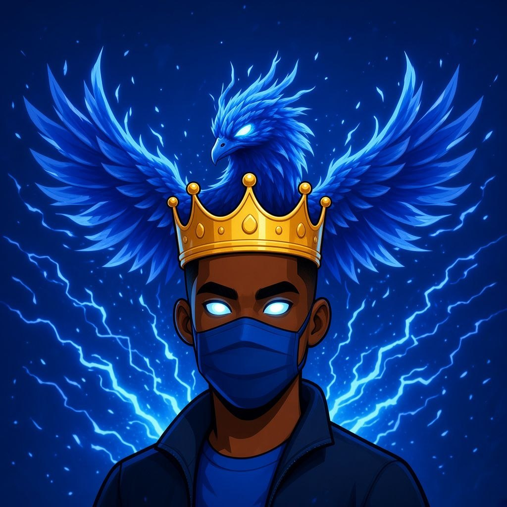
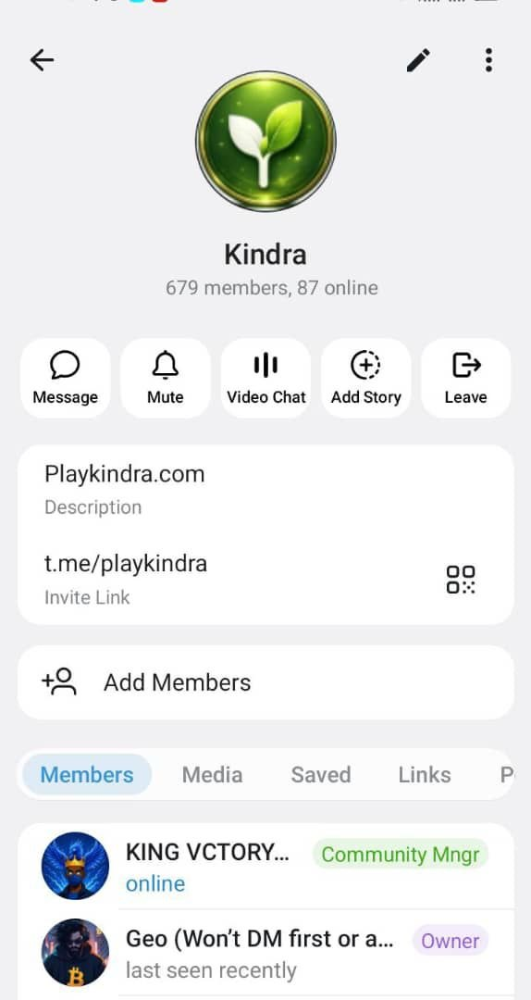
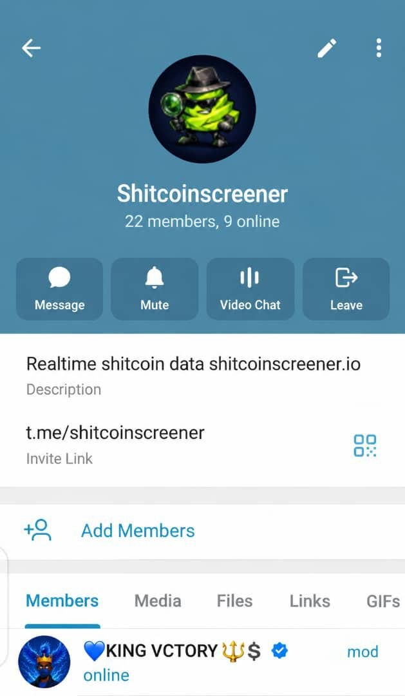
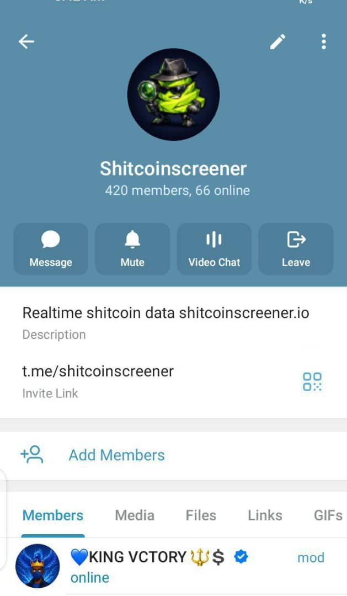
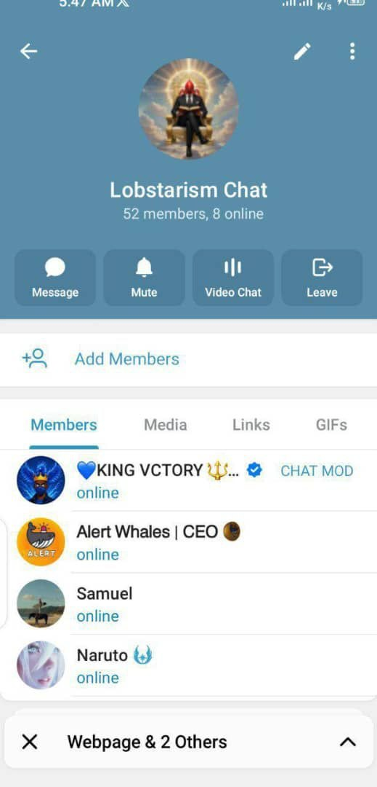
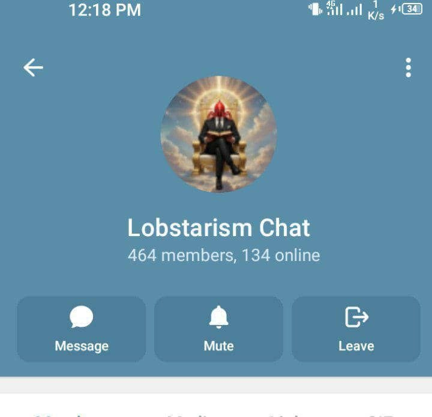
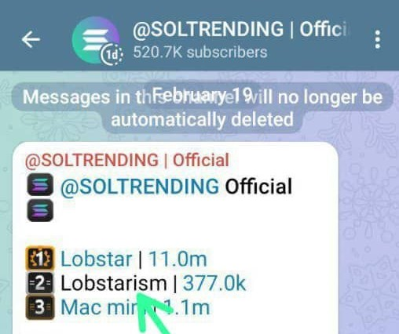
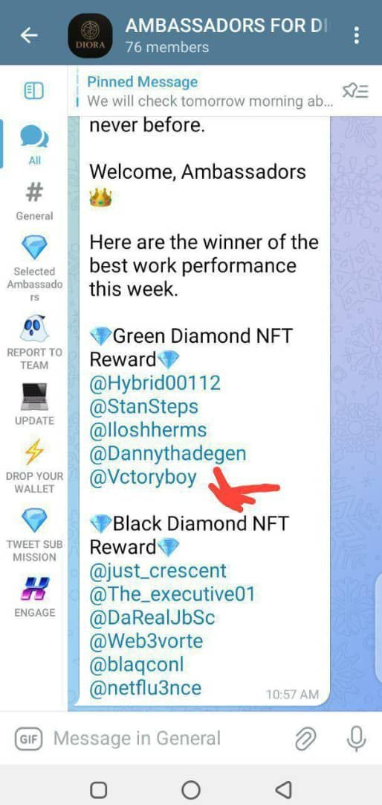
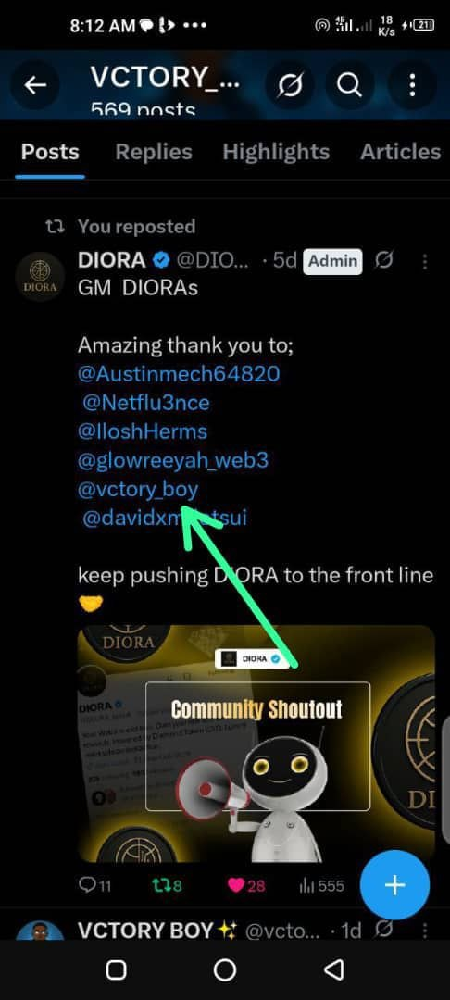
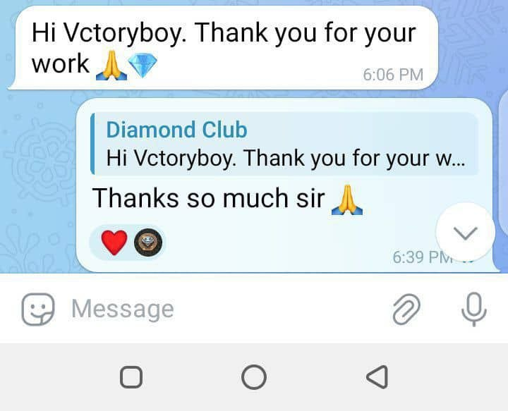

KING VCTORY
I create content, build communities and amplify Web3 projects with vibes, value & virality.

NOT JUST ANOTHER WEB3 PROFILE.
I TURN ATTENTION INTO COMMUNITY.
I'm Edime Victor, known as KING VCTORY — a Web3 content creator, 3D video editor, content marketing strategist and community manager.
I create content, represent projects and bring energy into communities through creativity, consistency and culture.
From visual storytelling to community engagement, I help Web3 projects turn attention into something people can actually connect with.
ENTER THE PROOF OF WORK ↗WORK THAT SPEAKS
BUILT TO GET SEEN.
A selection of projects, campaigns and Web3 collaborations where creativity meets community.
FROM MODERATOR TO COMMUNITY MANAGER.


Entered as a moderator and became a Community Manager — helping drive a 400% increase in community growth in less than a month.
Working alongside the dev team and community, we pushed $KINDRA from a $160K market cap to $700K+.
Always keeping the community BULLISH, active and encouraged.

BEFORE
AFTERTURNING COMMUNITY INTO MOMENTUM.
Community growth went up by 2000% in under 14 days while I was managing the community.
I helped transform the project's community into a more active and connected ecosystem — keeping members engaged while creating opportunities for the project to expand.
Beyond community management, I brought in 100+ active partners to the project, helping extend its reach beyond the existing community.



FROM COMMUNITY TO TRENDING.
I got hired as a Moderator for Lobstarism 🦞 and helped push the community into the spotlight.
Through consistent community activity, engagement and coordination, we pushed Lobstarism to #2 trending on Sol Trending.
From the point I was hired, the community grew by 1000% — with the growth coming from real and active members.



REPRESENTING WITH PURPOSE.
I became an Ambassador for Diora_Social, putting my best into every piece of work I delivered.
My consistency and contribution earned me recognition as one of the best-performing Ambassadors on the platform.
As recognition for the work, I won an NFT worth $500+ and was officially recognized as an Ambassador for the platform.
When I join a project, I bring the same energy, consistency and commitment toward helping it reach more people.
TOP 3 OUT OF 500+.
As an Ambassador for Flipflop Launchpad, I currently rank in the top 3 among 500+ Ambassadors.
The ranking comes from consistently showing up through highly active and engaging videos and content , keeping the community involved and making bullish moves around the project.
My approach goes beyond simply holding an Ambassador title — I actively create, engage and represent the project wherever I can add value.
That's the full package I bring when I'm part of a team.
CONTENT. COMMUNITY. CULTURE.